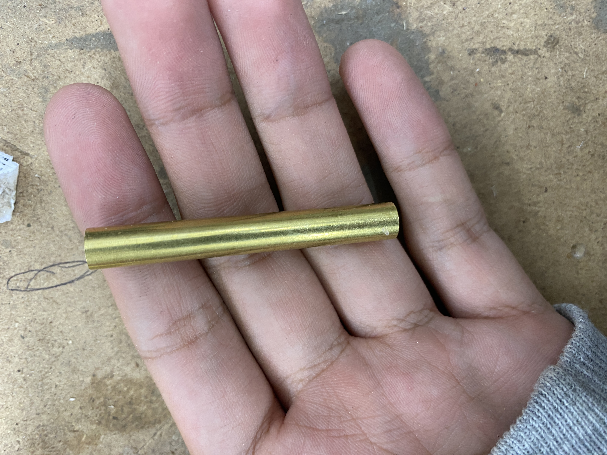
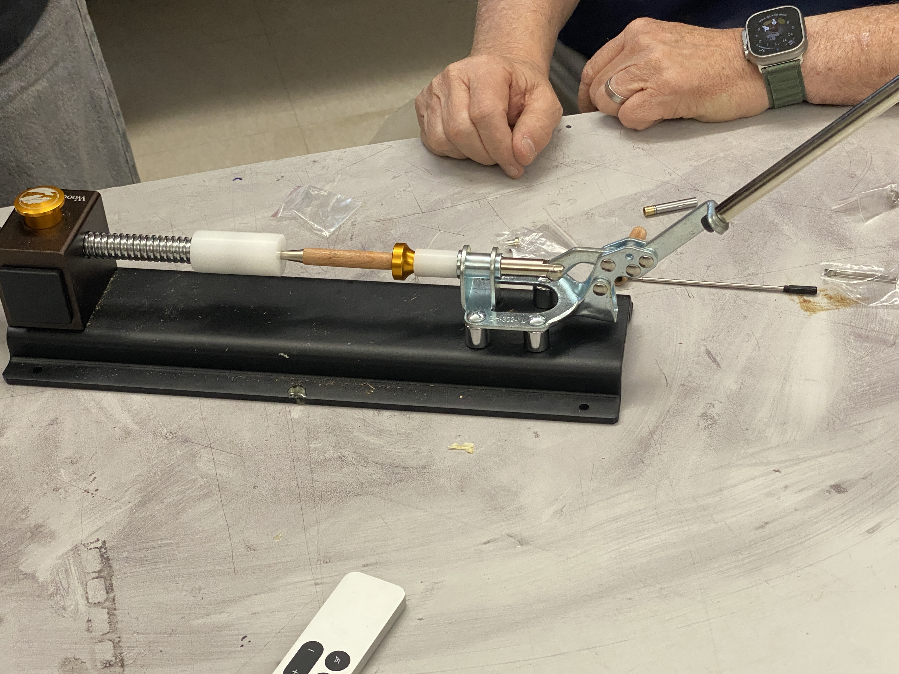

Pen Turning
I turned a pen.
With the help of my instructor, I first cut the wood into rectangular prisms.
 |
Next, I put the wood blocks into a lathe to create a cylindrical hole inside the wood.
 |
I then sanded the copper tubes which would hold the pen cartridge in order to rough them up a bit to give it more surface area when gluing.
|  |  |
I then used a chisel(?) to chip away parts of the wood as it was spinning until it was rounded.
After the wood was sufficiently round, I applied a light touch of glue and accelerant to smooth out the surface.

I then crushed the wood with the other parts of the pen together to fully assemble it.
